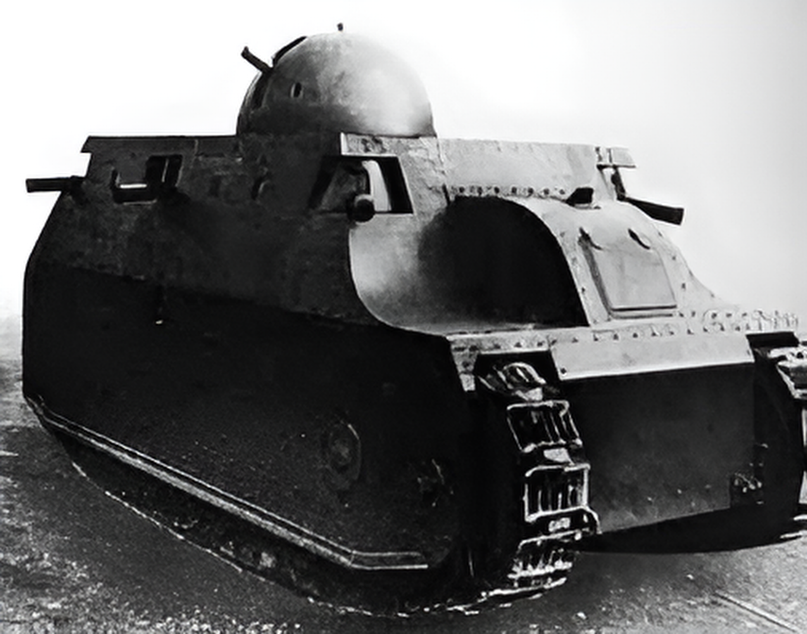

The Fiat 2000 was Italy’s first operational tank and one of the heaviest designs of World War I. Developed in 1917 by the Fiat company, it was intended to break through entrenched positions on the Italian Front, inspired by the success of French and British tanks. Only two prototypes were built, and it never saw combat before the end of the war. The tank was powered by two Fiat gasoline engines, giving it a top speed of about 7 km/h on roads. It had wide tracks for improved mobility over rough terrain, but like most WWI tanks, it was slow and mechanically complex. The Fiat 2000 remained a prototype and was not deployed in combat, but it demonstrated Italy’s early ambitions in armored warfare and influenced post-war Italian tank development.

- Characteristics:
- Type: Heavy tank
- Weight: 40 tons
- Crew: 10
- Armament: 65/17 howitzer; 7 x 6.5mm FIAT-Revelli machine guns
- Speed: 7 km/h